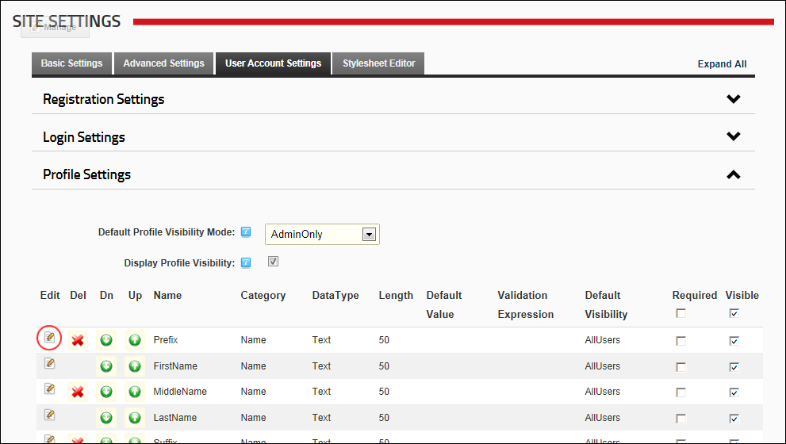

Editing Profile Settings
How to permanently delete one or more profile fields using the Site Settings page.
- Navigate to Admin >
 Site Settings.
Site Settings.
- Select the User Account Settings tab.
- Expand the Profile Settings section.
- Optional. Click the Refresh Grid link located at the base of the module. This refreshes the grid with any recent updates.
- Click the Edit
 button beside the profile field to be edited.
button beside the profile field to be edited.

- On the Edit Property Details page, edit one or more the following fields as required:
- In the Property Name text box, enter a name for this property as it will appear on the Manage Profile page.
- At Data Type, select a data type from the following options: Checkbox, Date, DateTime, Country, List, Locale, Page, Region, RichText, TimeZone, Integer, Multi-line Text, Text, TrueFalse, Image, TimeZoneInfo and Unknown.
- In the Property Category text box, enter the category that this property belongs to. This determined where it is displayed in the profile. Pre-existing categories are: Name, Address, Contact Info, Preferences.
- Optional. In the Length text box, enter the maximum character length for this field. This is only relevant to fields where users enter information such as Text and RichText data types.
- Optional. In the Default Value text box, enter the default value for this field.
- Optional. In the Validation Expression text box, enter a regular expression to validate data entered into this field.
- Optional. At Required, to set the field as required - OR - to set it as optional.
- Optional. At Read Only, to set the field as editable by Administrators only. Other users can view this field but cannot edit it.
- Optional. At Visible, to set the field as visible in the User Accounts module - OR - to hide it.
- Optional. In the View Over text box, enter the view order for this property.
- At Default Visibility, select one of the following options to set the default visibility of this property:
- All Users: All users can view this property by default.
- Members Only: Only registered users can view this property by default.
- Admin Only: Only Administrators can view this property by default.
- Click the Next button. This saves this property information entered above and opens the Manage Localization page.

- On the Manage Localization page, edit one or more fields as required, and then click the Save Localized Text link.
- Click the Return link to return to the Manage Profile Properties page.